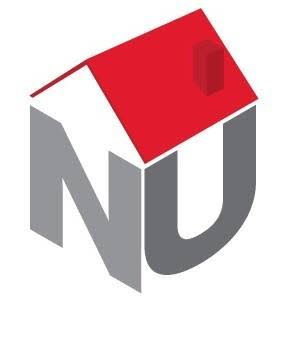
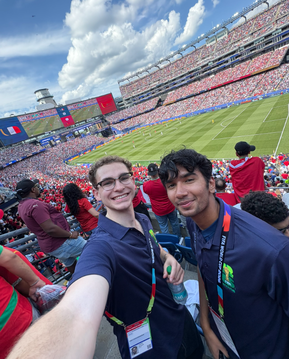
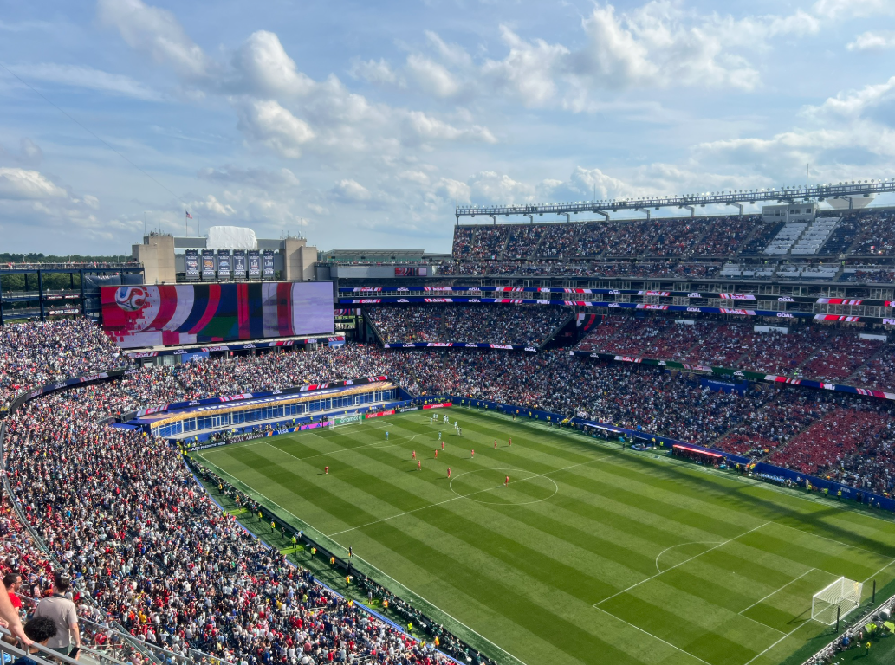
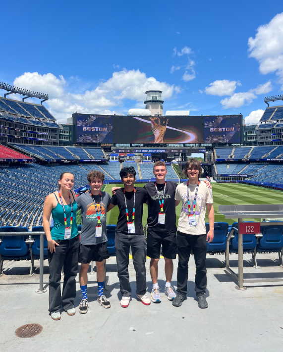
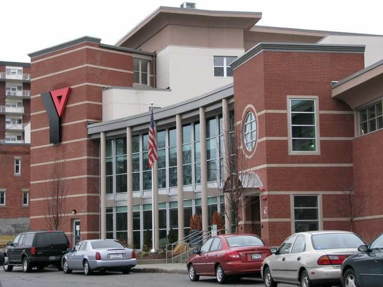
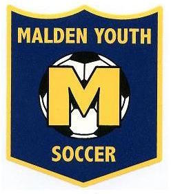

Volunteering
Community-focused work spanning campus life, international events, tutoring, and youth coaching.
Build and maintain a safe, supportive, inclusive residential community, handling conflict resolution, safety procedures, and incident response while connecting students with campus resources.

Supported venue preparation and event operations during one of the largest international sporting events in the world, helping direct fans, manage high-traffic movement, and keep the venue running smoothly for visitors from around the globe.



Tutor students in Calculus III and General Chemistry, explaining reasoning behind each step and adapting to how each student learns. Maintained strong feedback and a high tutoring rating.
Support food distribution for families facing food insecurity, organizing supplies, prepping distribution areas, and assisting visitors directly.

Run practices and support young players, teaching teamwork, sportsmanship, and confidence while adjusting activities to each kid's skill level.
